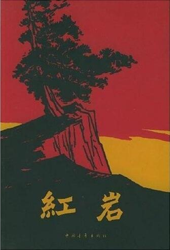

首页
建党历程
人物介绍
好书推荐
首页 >> 图书馆
红岩
描写了人民解放军进军大西南的形势下，重庆的国民党当局疯狂镇压共产党领导的地下革命斗争。 着重表现以齐晓轩、许云峰、江雪琴等共产党人在狱中所进行的英勇战斗，虽然最后惨遭屠杀，但却充分显示了共产党人视死如归的大无畏英雄气概。 小说结构错综复杂又富于变化，善于刻画人物心理活动和烘托气氛，语言朴实，笔调悲壮，作品一经面世，立即引起轰动。
中文名：红岩
出版社：中国青年出版社
别名：在烈火中重生
作者：罗广彬，杨益言
字数：41万字
出版时间：1961年12月
类别：革命类
青春之歌
以20世纪30年代日本侵华过程中发生的“九·一八事变”到“一二·九运动”的爱国学生运动为背景，通过女主人公林道静的成长故事，构筑了革命历史的经典叙事，也揭示出知识分子成长道路的历史必然性。 《青春之歌》的情节生动，人物形象鲜明，尤其是几个正面人物，真实感人。该书入选“新中国70年70部长篇小说典藏”。
中文名：青春之歌
出版社：作家出版社(初版)
作者：杨沫
字数：39余万字
出版时间：1958年1月
类别：现实主义长篇小说
保卫延安
是当代文学史上第一部大规模正面描写解放战争的优秀长篇，被誉为“英雄史诗”。小说真挚动人地描写了这次保卫延安战争中几个著名战役，描写了彭德怀将军， 描写了指战员中不少奋不顾身的英雄人物，作品以周大勇连长的英雄事迹为核心，描绘了人民战争的历史画卷，是一部描写我国人民解放战争的有力作品。
中文名：保卫延安
出版社：人民文学出版社
作者：杜鹏程
出版时间：2005年1月
类别：小说
太阳照在桑干河上
是丁玲深入农村斗争生活后写的反映土改运动的优秀长篇小说。由于思想上和艺术上的成就，曾荣获1951年度斯大林文学奖金二等奖。 全书是从一个后来被错划成富农的富裕中农顾涌，在附近村子听到土改斗争的风声开始的。 作者以细腻的笔触写了暴风雨到来前暖水屯人们心理上的变化，对斗争风暴的到来做了有声有色的描绘。
中文名：太阳照在桑干河上
出版社：人民文学出版社
作者：丁玲
出版时间：1956年8月
类别：小说

好书推荐
青春之歌
该小说以20世纪30年代日本侵华过程中发生的“九·一八事变”到“一二·九运动”的爱国学生运动为背景，通过女主人公林道静的成长故事，构筑了革命历史的经典叙事，也揭示出知识分子成长道路的历史必然性。《青春之歌》的情节生动， 人物形象鲜明，尤其是几个正面人物，真实感人。该书入选“新中国70年70部长篇小说典藏”。
铁道游击队
《铁道游击队》是一部反映在抗日战争时期，鲁南地区党领导下的一支游击队在临枣支线、津浦干线上，打击日伪军的交通线、与敌人进行游击斗争的英雄故事。
《铁道游击队》歌颂了铁路工人抗击日寇的顽强意志和英勇战斗精神。故事生动曲折，人物栩栩如生，富有传奇性。
保卫延安
《保卫延安》，杜鹏程所著，是当代文学史上第一部大规模正面描写解放战争的优秀长篇，被誉为“英雄史诗”。 小说真挚动人地描写了这次保卫延安战争中几个著名战役，描写了彭德怀将军，描写了指战员中不少奋不顾身的英雄人物， 作品以周大勇连长的英雄事迹为核心，描绘了人民战争的历史画卷，是一部描写我国人民解放战争的有力作品。
上海的早晨
作品第1部写民族资产阶级猖狂进攻；第2部写打退民族资产阶级进攻，开展“五反”运动；第3部写民主改革；第4部写公私合营， 通过改变资产阶级私有制，逐步过渡到公有制，消灭私有制。小说揭示了社会主义改造的必然性和曲折性，展示了资产阶级的历史命运。
红日
《红日》是当代作家吴强所创作的长篇小说，首版于1957年。
《红日》以1947年发生在江苏的涟水、山东的莱芜、孟良崮三次战役为主线，详略得当地描述了这三次战争。《红日》曾入选“新中国70年70部长篇小说典藏”
红岩
《红岩》描写了人民解放军进军大西南的形势下，重庆的国民党当局疯狂镇压共产党领导的地下革命斗争。着重表现以齐晓轩、许云峰、江雪琴等共产党人在狱中所进行的英勇战斗，虽然最后惨遭屠杀，但却充分显示了共产党人视死如归的大无畏英雄气概。 小说结构错综复杂又富于变化，善于刻画人物心理活动和烘托气氛，语言朴实，笔调悲壮，作品一经面世，立即引起轰动。
太阳照在桑干河上
《太阳照在桑乾河上》是丁玲深入农村斗争生活后写的反映土改运动的优秀长篇小说。由于思想上和艺术上的成就，曾荣获1951年度斯大林文学奖金二等奖。全书是从一个后来被错划成富农的富裕中农顾涌， 在附近村子听到土改斗争的风声开始的。作者以细腻的笔触写了暴风雨到来前暖水屯人们心理上的变化，对斗争风暴的到来做了有声有色的描绘。
创业史
《创业史》以梁生宝互助组的发展为线索，表现了中国农业社会主义改造进程中的历史风貌和农民思想情感的转变。[1]作者在《创业史》中使用了典型化的创作方法， 他把农业生产化运动，放在中国的历史长河中去考察，进而写出历史演进的趋势，而非仅仅就合作化去写合作化。。
红旗谱
《红旗谱》，梁斌著小说，于2004年出版。小说通过在大革命失败前后十年革命斗争的历史背景下，冀中平原两家农民三代人和一家地主两代人的尖锐矛盾斗争， 以“反割头税”和“二师学潮”为中心事件，生动地展示了当时农村和城市阶级斗争和革命运动的壮丽图景，获得重大的成就。
敌后武工队
《敌后武工队》是2009年解放军文艺出版社出版的长篇小说，作者是冯志。故事主要根据抗日战争时期武工队战斗经历， 描写的冀中抗日斗争的故事，是一部红色经典之作。先后三次被改编拍摄成电视剧和电影。
作者详情
洋
沫
|
|
青
春
之
歌
刘
知
侠
|
|
铁
道
游
击
队
杜
鹏
程
|
|
保
卫
延
安
周
而
复
|
|
上
海
的
早
晨
孟
良
崮
|
|
红
日
杨
益
言
|
|
红
岩
丁
玲
|
|
太
阳
照
在
桑
干
河
上
柳
青
|
|
创
业
史
梁
斌
|
|
红
旗
谱
冯
志
|
|
敌
后
武
工
队